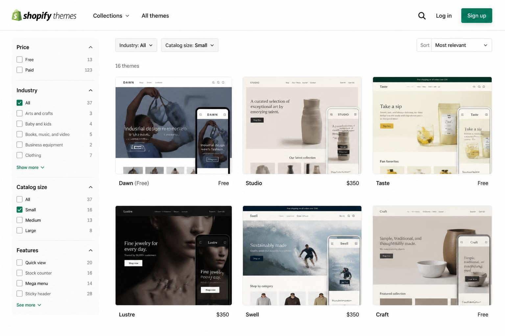
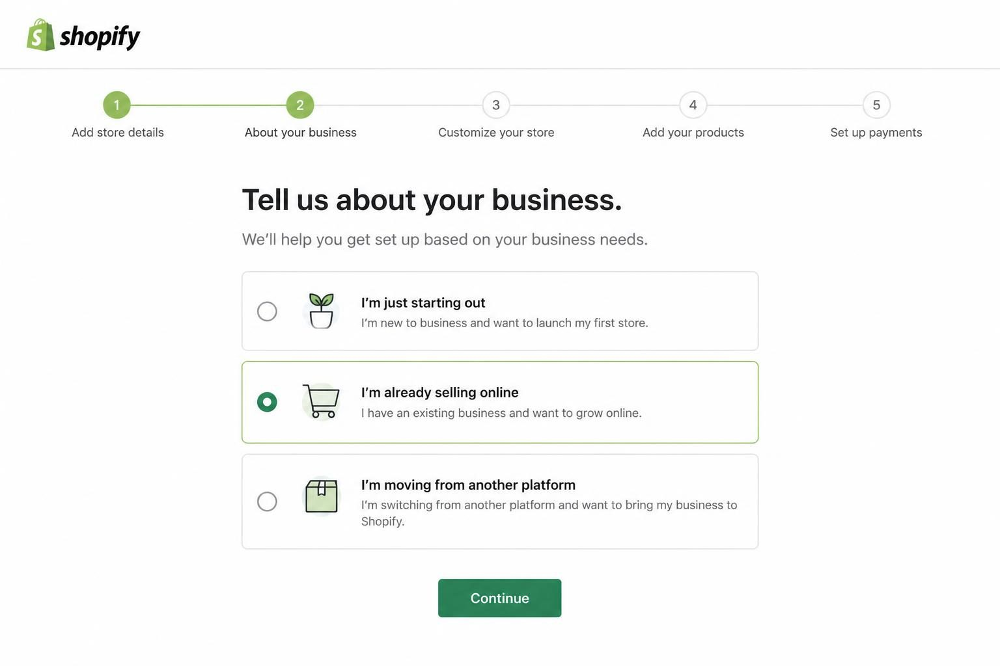
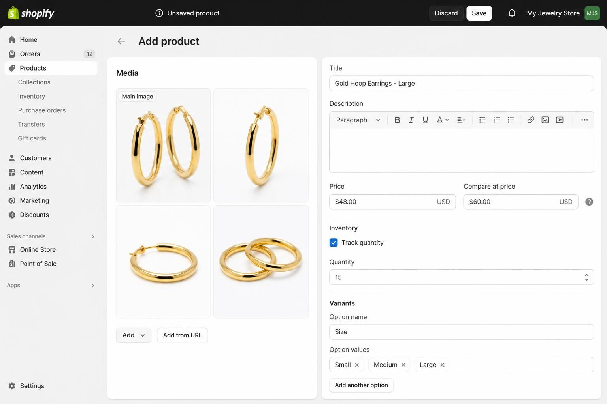
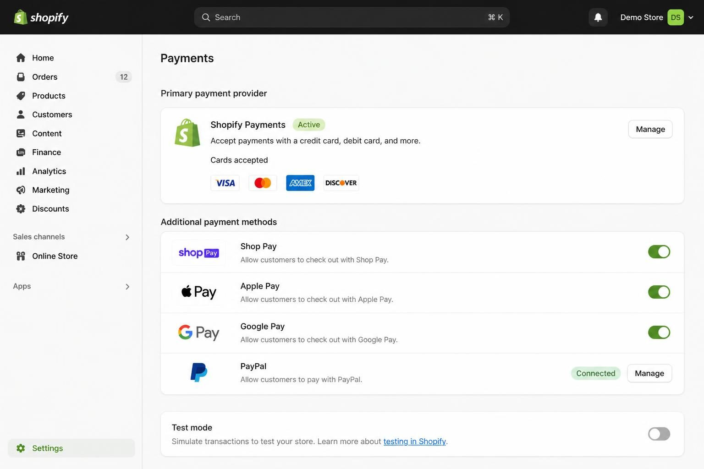
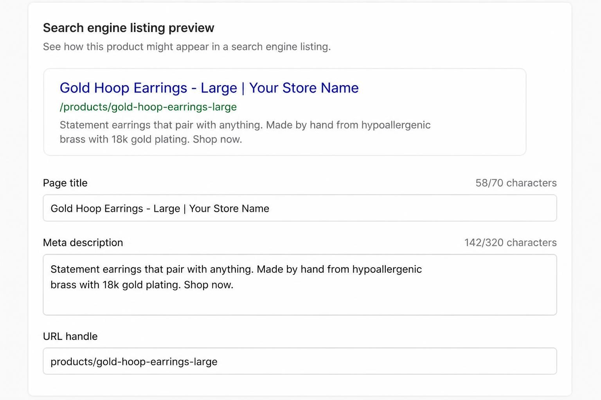

HOW TO CREATE A WEBSITE ON SHOPIFY: THE STEP-BY-STEP GUIDE FOR PRODUCT SELLERS
The fastest way to create a website on Shopify is to start with a premade theme built for your catalog size, customize the essential pages first, add your products with complete photography and descriptions, then publish - all within a week if you stay focused. Most product sellers overcomplicate this by installing apps before launch, agonizing over theme choices for days, or skipping the test order that catches checkout problems before real customers find them.
You have products ready to sell. Maybe you have been running your business through Instagram DMs or an Etsy shop, and you know it is time to own your storefront instead of renting space on someone else's platform. Shopify is the obvious choice for product-based businesses - but actually building the site feels like a different problem entirely.
The blank editor. The theme options. The settings menus that seem to multiply every time you click somewhere new. It is easy to spend two weeks "setting up" and still not have a live store.
This guide walks you through how to build a Shopify website from scratch - the actual mechanics of signing up, choosing a starting theme, customizing your pages, adding products, and publishing a store that looks professional and works properly. Not business strategy. Not tax advice. Just the site itself, built right the first time.
CHOOSING A THEME THAT MATCHES HOW YOUR BUSINESS ACTUALLY SELLS
The theme you pick determines how your store looks and how it functions - both matter, and neither one covers for a weakness in the other. With 800+ themes in the Shopify ecosystem, most product sellers browse by appearance alone and end up with something that looks good but does not match how their business actually operates.
How big is your catalog?
This is the question that matters most. A handmade jewelry seller with 45 SKUs needs a completely different theme structure than a vintage reseller with one-of-a-kind inventory, and both need something different from a skincare brand with three hero products.
- Small catalog (1-15 products): You need a theme built around storytelling and product photography, not complex filtering. Landing-page-style themes work best here - big images, strong brand messaging, minimal navigation.
- Medium catalog (15-100 products): You need collection pages that organize products logically, basic filtering options, and navigation that does not overwhelm a first-time visitor.
- Large catalog (100+ products): You need robust search, filtering by multiple attributes, and a theme that handles large product grids without slowing down.
Choosing a theme designed for a different catalog size creates friction your customers feel immediately. A single-product brand using a theme built for massive inventories looks empty and confusing. A large catalog squeezed into a minimal theme makes products impossible to find.
The premium themes built specifically for product sellers include features like mega menus, slide-out cart drawers, free shipping progress bars, and cart upsell suggestions. These are not cosmetic additions - they directly affect your average order value.
Starting with a premade Shopify theme designed for your specific business type gets you a professional-looking store in a fraction of the time compared to building from Shopify's bare default. The design and functionality work together from the start.

THE FOUNDATION SETUP THAT MAKES EVERYTHING ELSE EASIER
Your first day on Shopify should focus entirely on foundation settings - the boring configuration that makes the rest of your build go smoothly.
Step 1: Create your account with intention. The email you use becomes your login and your customer notification sender. Use a professional email address - customers notice when order confirmations come from a Gmail address with numbers in it.
Step 2: Complete the setup wizard honestly. Shopify asks about your business type, products, and location. Do not skip or rush this. The platform uses your answers to pre-configure settings and recommend relevant features.
Step 3: Decide on AI generation vs. manual setup. Shopify's built-in AI can now generate a personalized storefront, product descriptions, headlines, and content. This is genuinely useful for first drafts and product descriptions at scale - but you will need to refine everything for your actual brand voice.
When to use AI generation: Getting past the blank page, writing initial product descriptions for large catalogs, generating placeholder content you will edit.
When to customize manually: Homepage messaging, about page content, anything that communicates your brand story or unique positioning.
Step 4: Install your theme before building pages. Select your theme first because it determines what sections and features you have access to. Customizing pages before installing your final theme often means redoing work.
Step 5: Connect or purchase your domain. You have two options: use Shopify's free yourstore.myshopify.com subdomain while building, then add a custom domain before launch - or purchase a domain upfront through Shopify or a third-party registrar.
For product sellers, brand trust is directly tied to professional domain presence. A custom domain is not optional for a business you want people to take seriously. If you already own a domain elsewhere, Shopify walks you through connecting it.

THE FIVE PAGES YOU MUST BUILD FIRST (IN THIS ORDER)
Your first five pages determine 80% of your customer experience. Most tutorials list "add relevant pages" as a single step without explaining what belongs on each or why the order matters.
Page 1: Homepage - Build this first because every other page links back here. Your homepage needs: a hero image or video with a clear headline, featured products or bestsellers, social proof (reviews, customer photos, trust badges), and obvious navigation to your main collections.
Do not write a lengthy brand story on your homepage. That belongs on your About page. Your homepage job is to get visitors to a product or collection page within 5 seconds.
Page 2: Collection pages - Create these before individual products. Collections are how customers browse. Group products by category (earrings, necklaces, rings), by use case (everyday jewelry, statement pieces), or by price point (under $50, luxury).
Your navigation menu should feature collections, not individual products. A visitor should be able to reach any product in three clicks or fewer.
Page 3: About page - This is where your brand story lives. Include: who you are, why you started the business, what makes your products different, and a photo of yourself or your workspace. Product sellers often skip the photo. Do not skip it. Customers buy from people they trust, and a face creates trust.
Page 4: Contact page - Include a contact form, your email address, expected response time, and your physical address if applicable. Setting response time expectations ("I respond within 24 hours on business days") prevents customer frustration.
Page 5: Policy pages - Shopify can auto-generate Privacy Policy, Terms of Service, and Refund Policy templates. Customize these for your actual business. Your shipping policy should include: processing time, carriers used, estimated delivery windows, and whether you ship internationally.
These five pages are non-negotiable before launch. Everything else - FAQ pages, size guides, care instructions - can be added after you have real customer questions to answer.
THE PRODUCT SETUP THAT ACTUALLY SELLS
Adding products is where most Shopify guides go vague. "Upload your products" is not helpful when you have never done it before and do not know what information matters.
Product titles need to be searchable and clear. Include what the item is and one key attribute. "Gold Hoop Earrings - Large" tells customers exactly what they are looking at. "The Claudia" does not.
Descriptions need both features and benefits. Features are what the product is (materials, dimensions, care instructions). Benefits are what the product does for the customer (makes getting ready faster, goes with everything, lasts for years).
Write the benefit first, then support it with features. "Statement earrings that pair with anything from jeans to formal dresses. Made by hand from hypoallergenic brass with 18k gold plating. 2.5 inches long, lightweight enough for all-day wear."
Product photos require five angles minimum:
- Hero shot - the main image customers see in collection grids
- Detail shot - close-up of texture, finish, or workmanship
- Scale shot - shows size relative to something recognizable (hand, model, ruler)
- Lifestyle shot - the product in use or styled context
- Alternate angle - shows the product from a different perspective
Alt text is not optional. Every single product image needs alt text for SEO and accessibility. Describe what the image shows: "Gold hoop earrings shown on model with dark hair, wearing white shirt, natural lighting."
Variants require individual attention. If your product comes in multiple sizes or colors, each variant needs its own inventory tracking. Decide on "continue selling when out of stock" per product - turn this OFF for one-of-a-kind items, consider turning it ON for made-to-order items with reliable production times.
For large catalogs, Shopify accepts bulk uploads via CSV file. This is significantly faster than adding products one by one once you understand the template format.

PAYMENT AND CHECKOUT: THE CONFIGURATION THAT DIRECTLY AFFECTS REVENUE
Shopify describes their checkout as "the world's best-converting checkout" - and while that is their own claim, the mechanics behind it are real. Shop Pay's accelerated checkout saves payment information across the entire Shopify ecosystem, meaning returning customers can check out in seconds.
Set up Shopify Payments first. This is your primary payment processor. It requires business verification, so have your business details ready. Once activated, you can accept credit cards, debit cards, and Shop Pay.
Enable secondary payment options during initial setup - not as an afterthought:
- Shop Pay - accelerated checkout for returning customers
- Apple Pay - one-tap checkout on Apple devices
- Google Pay - one-tap checkout on Android devices
- PayPal - some customers still prefer it, especially for larger purchases
Offering multiple payment options removes friction at the exact moment a customer has decided to buy. Do not make them abandon their cart because their preferred payment method is missing.
Configure shipping before you launch. Start with your domestic shipping zones and rates. You have two main approaches:
Calculated shipping pulls real-time rates from carriers based on package weight and destination. This is accurate but can surprise customers with unexpected costs at checkout.
Flat rate shipping charges a consistent amount regardless of order size. This is simpler and often feels fairer to customers, but you need to price it so it covers your actual costs on average.
For lightweight products like jewelry or digital product physical packaging, flat rate often works better. For heavy or bulky products, calculated shipping prevents you from losing money on large orders.
Set up your tax collection - Shopify handles this automatically for most US locations based on your business address and customer shipping addresses.

TEST YOUR STORE BEFORE REAL CUSTOMERS FIND THE PROBLEMS
Test orders are mandatory before going live. Every competitor guide treats this as optional or skips it entirely. It is not optional. This is how you catch checkout errors, email notification problems, and inventory tracking issues before real customers encounter them.
Use Shopify's Bogus Gateway for test orders. This lets you simulate the checkout process without processing real payments. Go to Settings > Payments > Enable "Bogus Gateway" for testing.
Place a test order using these card details:
- Card number: 1 for successful transaction, 2 for failed transaction, 3 for provider error
- Any future expiration date
- Any 3-digit CVV
Complete the entire checkout process. Add a product to cart, enter shipping information, enter payment details, and submit the order.
Check these things after your test order:
- Order confirmation email - did it arrive? Does it look professional?
- Shipping address format - is the customer's address displaying correctly?
- Inventory tracking - did the product quantity decrease by one?
- Order in your admin - can you see all the details you need to fulfill it?
- Tax calculation - was the correct amount charged?
- Shipping cost - does it match what you configured?
Then place a real test order. Pay actual money, process an actual refund. This catches issues the Bogus Gateway cannot simulate, like actual payment processing errors or refund email notifications.
Yes, you will pay transaction fees on this order that you do not get back. Consider it a small cost of catching problems before a real customer does.
If you want to see what makes an ecommerce store actually convert, reviewing your test order experience as if you were a first-time customer is the most honest assessment you will get.
SEO CONFIGURATION THAT MUST HAPPEN DURING SETUP (NOT LATER)
Shopify has built-in SEO tools, but they do not work automatically. Most product sellers launch their store and then try to "add SEO later" - by which point they have built hundreds of pages with default settings that need individual correction.
Page titles and meta descriptions require manual optimization. Shopify auto-generates these based on your product and page names, but the defaults are rarely what you want customers and search engines to see.
For each product page, edit:
- Page title - include product name and one key keyword, under 60 characters
- Meta description - describe the product and include a benefit, under 160 characters
For each collection page, do the same. Collection pages often have more ranking potential than individual product pages because they target broader search terms.
Clean up URL handles. Shopify generates URLs from your product and page titles. A product titled "Limited Edition Hand-Painted Ceramic Mug - Blue Mountain Collection 2026" creates an ugly, long URL handle.
Edit the URL handle to something clean: "blue-mountain-ceramic-mug" - short, keyword-relevant, no unnecessary words.
Write alt text for every single image. We covered this in product setup, but it applies to all images on your site - homepage banners, about page photos, collection headers. Search engines cannot see images without alt text descriptions.
Submit your sitemap to Google Search Console. Shopify automatically generates a sitemap at yourstore.com/sitemap.xml. Submitting this tells Google your store exists and what pages to index.
This SEO work takes time during setup, but retrofitting it later takes significantly more time and you lose months of potential ranking progress.
For a complete guide to Shopify SEO specifically, read how to set up your Shopify store properly.

THE LAUNCH SEQUENCE THAT PREVENTS FIRST-WEEK DISASTERS
Your store is built, tested, and configured. Now launch it properly.
Remove password protection. During setup, Shopify keeps your store behind a password page so visitors cannot see unfinished work. Go to Online Store > Preferences and disable the password.
Preview your entire site on mobile before announcing. Open your store on your phone - not the desktop "mobile preview," but your actual phone. Navigate through the homepage, browse collections, open a product, add to cart, and start checkout.
With ecommerce accounting for over 20% of worldwide retail sales and most of that traffic coming from mobile devices, a store that looks wrong on phones loses the majority of potential customers.
Set up abandoned cart emails. Shopify can automatically email customers who add products to cart but do not complete checkout. Enable this in Settings > Notifications. The default email works fine to start - you can customize it later.
Install zero apps before launch. With 13,000+ apps in the Shopify App Store, it is tempting to install email marketing, reviews, pop-ups, shipping calculators, and a dozen other tools before opening. Do not.
Launch with the bare minimum. Identify actual gaps after real customer interactions. Then add apps strategically.
Apps slow your site down. Apps conflict with each other. Apps add complexity to troubleshooting problems. Every app you install before launch is an app you might not need - and removing apps later often leaves behind code fragments that cause issues.
Announce to your existing audience. Your email list gets the first notification. Then your social media followers. Do not expect strangers to find your store through search on day one - that takes months of SEO work.
Set up basic analytics tracking. Shopify analytics gives you essential data: total sales, traffic sources, popular products. Connect Google Analytics 4 for more detailed visitor behavior tracking.
If you are still deciding between platforms, the detailed comparison in Shopify vs Wix for ecommerce breaks down exactly when each makes more sense.
FREQUENTLY ASKED QUESTIONS
Can you create a website through Shopify?
Yes - Shopify is a complete website builder with ecommerce functionality built in. You get hosting, a domain connection option, theme customization, product management, payment processing, and shipping configuration all in one platform. You do not need to buy separate hosting or install additional software.
How much does it cost to create a website on Shopify?
Shopify's Basic plan is $29/month. Premium themes typically cost $150-$350 as a one-time purchase. A custom domain costs $10-20/year. Transaction fees vary by plan but start around 2.9% + 30 cents per transaction when using Shopify Payments. Your total first-year cost for a professional store is roughly $500-$750, depending on theme choice.
How easy is it to build a Shopify site from scratch?
If you follow a focused checklist, most product sellers can build a complete store in about one week. The difficulty is not technical - Shopify's editor is genuinely user-friendly. The challenge is decision fatigue: choosing from hundreds of themes, writing product descriptions, setting up shipping correctly. A premade theme designed for your business type eliminates most of those decisions.
Do I need an LLC to start a Shopify store?
No. You can start selling as a sole proprietor. Many successful Shopify sellers operate without an LLC, especially when starting out. That said, an LLC provides liability protection as your business grows. Consult with an accountant or business attorney about what structure makes sense for your specific situation - this is business formation advice, not website building advice.
How much does Shopify take from a sale?
Shopify Payments charges 2.9% + 30 cents per transaction on the Basic plan. If a customer pays $100, you receive $96.80 after fees. If you use third-party payment processors instead of Shopify Payments, you pay an additional 2% transaction fee on top of whatever that processor charges. Using Shopify Payments is almost always the cheaper option.
What would I need to create a Shopify store from scratch?
You need: an email address for your account, business information for Shopify Payments verification, product photos (minimum 4-5 per product), product descriptions, a logo, a color palette, shipping rates, and return/refund policies. Optional but recommended: a custom domain name and a premium theme that matches your catalog size.
YOUR SHOPIFY WEBSITE IS CLOSER THAN YOU THINK
Learning how to create a website on Shopify is mostly about doing the steps in the right order and not getting distracted by features you do not need yet.
Start with your theme choice - match it to your catalog size and business type, not just aesthetics. Build your five essential pages before anything else. Set up your products with complete photography and searchable descriptions. Configure payments and shipping correctly the first time. Test everything with a real checkout before you announce.
Then launch. Not when everything is perfect - when everything is functional, professional, and ready to take real orders.
The apps, the advanced features, the optimization - all of that comes after you have actual customers telling you what they need. You cannot optimize what does not exist yet.
Your first version does not need to be your final version. But you do need a first version that is live, selling, and bringing in real feedback.
If you want to skip the theme selection paralysis entirely and start with a professionally designed Shopify theme built for product sellers, the Switzertemplates Shopify themes include everything discussed in this guide: mega menus for easy navigation, slide-out cart drawers, free shipping progress bars, and cart upsell suggestions - all designed to convert browsers into buyers from day one.
Let me know in the comments below if you want me to cover any branding or marketing topics in more depth, and I'll make sure to create a blog post about it in the future.